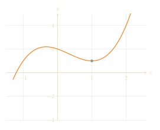

Nature is lazy and always evolves in the most "efficient" way possible. This is why soap bubbles are spherical--to minimize surface area--and why light refracts when traveling through glass.
Lagrange's idea was to use this principle, that nature is lazy, as the foundations for mechanics. This is in contrast to Newton's approach to mechanics, which is based on force. Our goal in this article is to mathematically formalize Lagrange's idea.
Since Newton's approach to physics already works so well, you may ask why we care about Lagrange's approach. For one, the more abstract approach to mechanics is better at solving complicated physical systems, and adapts better to other settings such as quantum mechanics. Another reason is Emmy Noether's discovery that conservation laws (conservation of energy, momentum, and angular momentum) correspond to continuous symmetries.
Noether's theorem fall out naturally from Lagrange's approach to mechanics! We will explore this more next week.
The important point is that \(L\) is some function of the position \(\vec x\) and the velocity \(\vec v\) of the particle, and time \(t\). We might write it as \[ L(\vec x,\vec v,t)=L(x_1,x_2,x_3,v_1,v_2,v_3,t).\] Our goal is to understand how the positions and velocities of the particles change over time.
Let's say we know at time \(t=0\) the particle is at position \(\vec x\), and at time \(t=T\) the particle is at position \(\vec y\). Which path could the particle have taken to get from \(\vec x\) to \(\vec y\)? Let's say the particles evolve as functions \(\vec x(t)=(x_1(t),x_2(t),x_3(t))\) and their velocities evolve as the derivative, \(\vec v(t)=(v_1(t),v_2(t),v_3(t))\). Since we specified the positions of the particles at the beginning and end, we require \[ \vec x(0)=\vec x,\ \ \vec x(T)=\vec y. \]
The total energy expended after evolving from time \(0\) to \(T\) with these functions is the integral, called the action, \[ S=\int_0^T L\big(\vec x_1(t),\vec x_2(t),\vec x_3(t),\vec v_1(t),\vec v_2(t),\vec v_3(t),t\big)dt. \] Therfore, a lazy universe would try to minimize the value of \(S\). How do we go about solving this?
You might know how to minimize a function, say \(x^2-3x\). But notice that we are trying to solve a much crazier problem right now! When we are trying to minimize \(x^2-3x\), we are allowed to vary \(x\) in any way: we could let it be \(1\), or \(-2\), or \(3\). But Lagrange is trying to minimize some function \(S\) which depends on functions like \(x_1(t)\). That means we are free to choose each of the values \[ x_1(0.01),\ \ x_1(0.02),\ \ x_1(0.03)\] freely! You could let \[ x_1(0.01)=2.5,\ \ x_1(0.02)=-\pi,\ \ x_1(0.03)=20\] or \[ x_1(0.01)=-0.7,\ \ x_1(0.02)=-5,\ \ x_1(0.03)=-2,\] or, or, or, ... It seems almost impossible to minimize a function over such a big space of possibilities!
Before trying to minimize the action, let's review how we minimize usual functions.

Suppose our function \(f(x)\) achieved a minimum at some number \(x_0\), and let's try nudging it a little. Then \[ f(x_0+\epsilon)\approx f(x_0)+f'(x_0)\epsilon. \] If the derivative \(f'(x_0)\) were negative, then \[ f(x_0+\epsilon)\approx f(x_0)+f'(x_0)\epsilon \] would be a little smaller than \(f(x_0)\), which contradicts \(f(x_0)\) being the minimum. Similarly, if \(f'(x_0)\) were positive, then \[ f(x_0-\epsilon)\approx f(x_0)-f'(x_0)\epsilon \] would be a little smaller than \(f(x_0)\), which again contradicts \(f(x_0)\) being the minimum. That means for \(f\) to achieve a minimum at \(x_0\) we need \(f'(x_0)=0\).For our function \(f(x)=x^3-x^2-x+2\), we would be solving the equation \[ f'(x_0)=3x_0^2-2x_0-1=0. \] If you solve the quadratic equation, you see two solutions: \[ x_0=-\frac13, \ \ x_0=1. \] Here, you see some subtleties in our approach! First of all, the derivative cannot distinguish between whether if live on top of a hill (at \(x_0=-\frac13)\) or if we live in a valley (at \(x_0=1\)). Moreover, even though \(x_0=1\) is a valley, it is not a minimum! You can see in the graph that if \(x_0\) is very negative, you get a smaller value of \(f\).
Although these are all valid concerns, for now let's pretend these issues don't exist, and that minimizing \(f\) is the same as \(f'(x)=0\). This already gives us interesting constraints on our physical system.
Remember that right now we are trying to minimize the action integral \[ S=\int_0^T L\big(x_1(t),x_2(t),x_3(t),v_1(t),v_2(t),v_3(t),t\big)dt. \] Although we don't really know what the derivative of \(S\) means, it still makes sense to nudge the variables of \(S\) a little bit. So let's try nudging \(x_1(t)\) to a different function \(x_1(t)+\epsilon(t)\), so \(v_1(t)\) also gets nudged to \(v_1(t)+\dot\epsilon(t)\), where \(\dot\epsilon(t)\) is the derivative of \(\epsilon(t)\). In analogy with the function case, we want to make sure the first-order error term vanishes. Since we were nudging our functions so that the start and endpoint of the particle is fixed at \(\vec x\) and \(\vec y\), we assume \[\epsilon(0)=\epsilon(T)=0.\]
We need to compare \(S\) with the nudged value \[ S'=\int_0^T L\big(x_1(t)+\epsilon(t),x_2(t),x_3(t),v_1(t)+\dot\epsilon(t),v_2(t),v_3(t),t\big)dt. \] What is the integrand? The way the function \(L\) changes when you nudge the variables is exactly what the partial derivatives tells you! That means \[ L\big(x_1(t)+\epsilon(t),x_2(t),x_3(t),v_1(t)+\dot\epsilon(t),v_2(t),v_3(t),t\big)\approx L+\epsilon(t)\frac{\partial L}{\partial x_1}+\dot\epsilon(t)\frac{\partial L}{\partial v_1}, \] where \(L\) is short-hand for \(L(x_1(t),x_2(t),x_3(t),v_1(t),v_2(t),v_3(t),t)\). Substituting into our equation, we see that \[ S'\approx\int_0^T\bigg(L+\epsilon(t)\frac{\partial L}{\partial x_1}dt+\dot\epsilon(t)\frac{\partial L}{\partial v_1}\bigg)dt. \] By definition \[ S=\int_0^TLdt, \] so \[ S'\approx S+\int_0^T\epsilon(t)\frac{\partial L}{\partial x_1}dt+\int_0^T\dot\epsilon(t)\frac{\partial L}{\partial v_1}dt. \]
The expression we end up with has both \(\epsilon(t)\) and \(\dot\epsilon(t)\). This looks hard to work with, so let's integrate by parts to get rid of \(\dot\epsilon(t)\). We compute: \[ \int_0^T\dot\epsilon(t)\frac{\partial L}{\partial v_1}dt=\bigg[\epsilon(t)\frac{\partial L}{\partial v_1}\bigg]_0^T-\int_0^T\epsilon(t)\frac\partial{\partial t}\bigg(\frac{\partial L}{\partial v_1}\bigg)dt \] Since we assumed \(\epsilon(0)=\epsilon(T)=0\), the first term disappears and we end up with \[ \int_0^T\dot\epsilon(t)\frac{\partial L}{\partial v_1}dt=-\int_0^T\epsilon(t)\frac\partial{\partial t}\bigg(\frac{\partial L}{\partial v_1}\bigg)dt. \]
By substituting back into our expression for \(S'\), we see \[ S'\approx S+\int_0^T\epsilon(t)\frac{\partial L}{\partial x_1}dt-\int_0^T\epsilon(t)\frac\partial{\partial t}\bigg(\frac{\partial L}{\partial v_1}\bigg)dt. \] We could re-group the expression, so \[ S'\approx S+\int_0^T\epsilon(t)\bigg(\frac{\partial L}{\partial x_1}-\frac\partial{\partial t}\bigg(\frac{\partial L}{\partial v_1}\bigg)\bigg)dt. \]
If \(\vec x(t)\) were an optimal path from \(\vec x\) to \(\vec y\), we would want the first-order error term above to vanish. The easiest way to make the first-order error term vanish is to just let \[ \frac{\partial L}{\partial x_1}-\frac\partial{\partial t}\bigg(\frac{\partial L}{\partial v_1}\bigg)=0, \] or in other words, \[ \frac{\partial L}{\partial x_1}=\frac\partial{\partial t}\bigg(\frac{\partial L}{\partial v_1}\bigg). \] This is the fundamental equation in Lagrange's formulation of mechanics, knonw as the Euler-Lagrange equation. By repeating the same argument by nudging the \(x_2\)-coordinate, we get \[ \frac{\partial L}{\partial x_2}=\frac\partial{\partial t}\bigg(\frac{\partial L}{\partial v_2}\bigg), \] and by nudging the \(x_3\)-coordinate we get \[ \frac{\partial L}{\partial x_3}=\frac\partial{\partial t}\bigg(\frac{\partial L}{\partial v_3}\bigg). \]
The same caveats as before apply here: the solution to the Euler-Lagrange equations aren't necessarily truly a minimum for the action integral \(S\). Oftentimes \(S\) is minimized, but not always. Nevertheless, Lagrange still postulates the equations as the axioms of his physics.
Let's imagine the ground is at \(x_3=0\), so the height of the ball is \(x_3\). That means the gravitational potential of the ball is \(mgx_3\), and our Lagrangian is \[ L=T-V=\frac12mv^2-mgx_3=\frac12m(v_1^2+v_2^2+v_3^2)-mgx_3. \]
The Euler-Lagrange equation for the first coordinate tells us \[ \frac{\partial L}{\partial x_1}=0 \] equals \[ \frac\partial{\partial t}\bigg(\frac{\partial L}{\partial v_1}\bigg)=\frac\partial{\partial t}(mv_1)=m\frac{dv_1}{dt}. \] So the Euler-Lagrange equations know that the ball shouldn't accelerate in the \(x_1\)-direction! This matches our physical intuition, since gravity is only acting in the vertical direction; the velocity of the object in horizontal directions shouldn't change. The Euler-Lagrange equation for the second coordinate also tells us \[ m\frac{dv_2}{dt}=0, \] which makes sense from the same physical intuition.
Finally, the Euler-Lagrange equation for the third coordinate tells us \[ \frac{\partial L}{\partial x_3}=-mg \] equals \[ \frac\partial{\partial t}\bigg(\frac{\partial L}{\partial v_3}\bigg)=\frac\partial{\partial t}(mv_3)=m\frac{dv_3}{dt}. \] In other words, \[ m\frac{dv_3}{dt}=-mg, \] which tells us \[ \frac{dv_3}{dt}=-g. \] This is just saying the ball accelerates downwards by \(g\), which is also exactly what we expect!